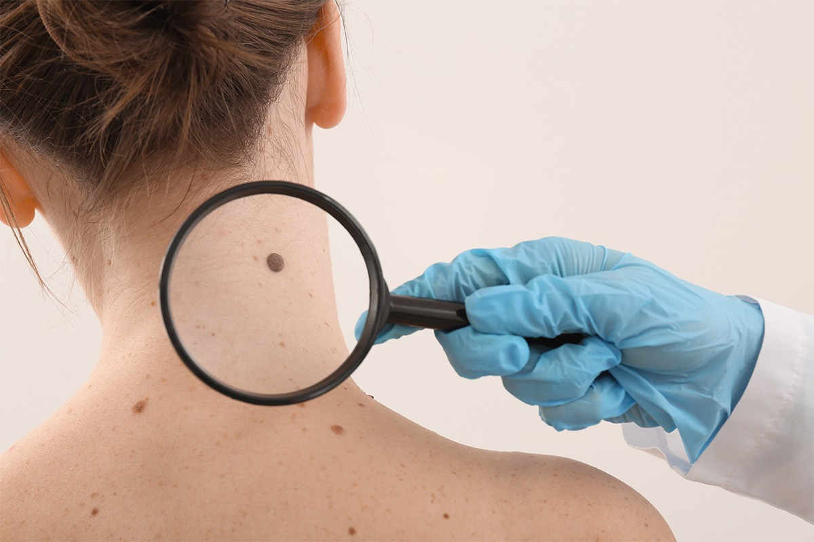

CONTÁCTANOS
CONTÁCTANOS
CONTÁCTANOS
CONTÁCTANOS
La reducción de la capa de ozono disminuye la protección natural que ofrece nuestra atmósfera contra la radiación ultravioleta (UV) perjudicial del sol. Esta página web proporciona una descripción general de los principales problemas de salud relacionados con la sobreexposición a la radiación UV. Comprender estos riesgos y tomar algunas precauciones sensatas lo ayudará a disfrutar del sol y a reducir sus posibilidades de tener problemas de salud relacionados con el sol.
El cáncer de piel es una preocupación creciente en Perú, especialmente debido a los altos niveles de radiación ultravioleta (UV) que se registran en diversas regiones del país.
Durante la temporada de verano, los niveles de radiación UV en Perú se elevan considerablemente, lo que incrementa el riesgo de desarrollar tumores en la piel, tanto benignos como malignos, como el melanoma.
A nivel mundial, más de 65,000 personas mueren cada año debido al cáncer de piel, y se diagnostican más de 13 millones de casos anualmente. Aunque no se dispone de estadísticas detalladas específicas para Perú, la alta exposición solar en el país sugiere una necesidad urgente de medidas preventivas.
El melanoma, la forma de cáncer de piel más grave, es ahora uno de los cánceres más comunes entre los adolescentes y los adultos jóvenes de entre 15 y 29 años. Si bien el melanoma solo constituye alrededor de un tres por ciento de los casos de cáncer de piel, causa más del 75 por ciento de las muertes por cáncer de piel. La exposición a la radiación UV y las quemaduras solares, especialmente durante la niñez, son factores de riesgo para la enfermedad. No todos los melanomas están exclusivamente relacionados con el sol; otras influencias posibles incluyen factores genéticos y deficiencias del sistema inmunológico.
Los cánceres de piel no melanoma son menos letales que los melanomas. Sin embargo, si no se tratan pueden extenderse, causando desfiguración y problemas de salud más graves. Existen dos tipos principales de cánceres de piel no melanoma: carcinomas de célula basal y de célula escamosa. Si se detectan y tratan a tiempo, estos dos cánceres raramente son fatales.
Carcinomas de célula basal: son el tipo más común de tumores de piel cancerosos. Generalmente aparecen como pequeños bultos o nódulos carnosos en la cabeza y en el cuello, pero pueden darse también en otras áreas de la piel. El carcinoma de célula basal crece lentamente, y rara vez se extiende a otras partes del cuerpo. Sin embargo, puede penetrar al hueso y causar un daño considerable.
Carcinomas de célula escamosa: son tumores que pueden aparecer como nódulos o como manchas rojas y escamosas. Este cáncer puede crecer a grandes masas y, a diferencia del carcinoma de célula basal, puede extenderse a otras partes del cuerpo.
Otros trastornos de la piel relacionados con la radiación UV incluyen la queratosis actínica y el envejecimiento prematuro de la piel. La queratosis actínica son crecimientos de piel que ocurren en las áreas del cuerpo expuestas al sol. El rostro, las manos, los antebrazos y el escote son especialmente susceptibles a este tipo de lesión. Si bien la queratosis actínica es premaligna, es un factor de riesgo para el carcinoma de célula escamosa. Si descubre en su piel crecimientos elevados, rojizos y ásperos, consulte con un médico sin demora.
La exposición crónica al sol también causa envejecimiento prematuro, que con el tiempo puede hacer que la piel se vuelva gruesa, arrugada y curtida. Dado que esto ocurre gradualmente, a menudo manifestándose muchos años después de ocurrida la mayoría de la exposición de una persona al sol, el envejecimiento prematuro suele considerarse como inevitable o como una parte normal del envejecimiento. Sin embargo, hasta un 90 por ciento de los cambios en la piel comúnmente atribuidos al envejecimiento son causados por el sol. Con una protección adecuada contra la radiación UV, la mayor parte del envejecimiento prematuro de la piel puede evitarse.
Las cataratas son una forma de daño a los ojos por el cual una pérdida de transparencia en el cristalino del ojo nubla la visión. Si no se tratan, las cataratas pueden ocasionar ceguera. La investigación ha demostrado que la radiación UV aumenta las probabilidades de ciertas cataratas. Si bien es una enfermedad curable con la cirugía ocular moderna, las cataratas disminuyen la vista de millones de estadounidenses y cuestan miles de millones de dólares en atención médica cada año.
Otros tipos de daños a los ojos incluyen pterigión (un crecimiento de la conjuntiva que puede boquear la visión), cáncer de piel alrededor de los ojos, y degeneración de la mácula (la parte de la retina donde la percepción visual es más aguda). Todos estos problemas pueden reducirse con la protección adecuada para los ojos. Busque antojos de sol, anteojos o lentes de contacto si los usa, que ofrezcan una protección UV entre 99 y 100 por ciento.
Los científicos han descubierto que la sobreexposición a la radiación UV puede suprimir el funcionamiento del sistema inmunológico del cuerpo y las defensas naturales de la piel. Por ejemplo, la piel normalmente se defiende contra los invasores extraños como cánceres e infecciones. Pero la sobreexposición a la radiación UV puede debilitar el sistema inmunológico, reduciendo la capacidad de la piel para protegerse contra estos invasores.
Actualizado el Ferbrero 9, 2025